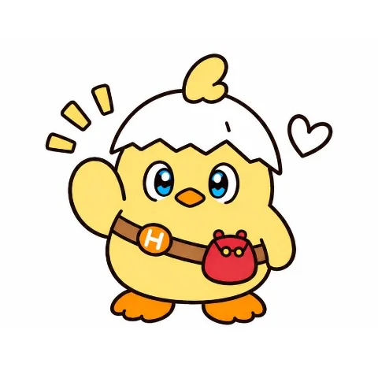

🐣 HIYOKOを知る
公式サイト（hiyokotoken.com）の内容を、ファンがやさしくまとめたものです。
ゲームと健康の活動を、ポイントからトークン（HYK）へつなぐ、Web3のしくみです。
考え方
まず楽しむ。トークンは、あとから。
- 遊ぶ・健康の活動
- CheePointをためる
- 外部プラットフォームで交換
- HYKを持つ・取引
- ステーキングなど
プロジェクト
Happy Chickゲームの入口
1万本以上のゲームが遊べるエミュレーター。ウォレットなしでCheePointがたまる。
CheePointポイント
トークンではなく、価格もない。ふだんの活動とHYKをつなぐ橋。
HYK中心のトークン
BNB Smart Chain（BEP-20）。発行数10億。CoinStoreで取引できる。
Vitalis健康（HealthFi）
虹彩認証と健康レポート。HYKで払うと割引。
コミュニティ仲間づくり
SNS・Telegram・イベント。東南アジアが中心。
ロードマップ
- 2026年 4〜6月完了
- CoinStoreに上場
- ホワイトペーパーを更新
- SNS・コミュニティの戦略
- 2026年 7〜9月進行中
- 東南アジアでキャンペーン
- Vitalisの紹介ページ
- オフラインイベントの計画
- 2026年 10〜12月予定
- CheePointキャンペーンを拡大
- 外部プラットフォームの開発
- HYKで払う特典を決める
- 2027年〜これから
- CheePointとHYKの交換
- Vitalisを広げる
- ステーキング・新しい上場
目的
ゲーム・ポイント・健康を、1つの流れに
ゲームの活動、ポイント、健康への取り組みを、HYKで1つの価値の流れにつなぐ。
まず遊んでポイント、トークンはあとから
楽しむ部分とトークンの部分を分ける。最初はウォレットなしで遊んでCheePointをため、HYKにはあとからつなぐ。
CheePointはトークンではない
CheePointはシンプルなポイント。トークンではなく、価格もない。
価格の約束はしない
買い戻し・分配などのしくみは、供給の管理のためで、価格を約束するものではない。
内容や予定は変わることがあります（公式の注意書きより）。投資のすすめではありません。
キャラクター

HIYOKO
One little chick, big energy
プロフィール
- 名前
- HIYOKO
- すがた
- ひよこのマスコット
- キャッチコピー
- One little chick, big energy
- 役わり
- エコシステムのあちこちに登場して、HYKを応援する
いろいろなHIYOKO
画像：公式Instagram @hiyoko_global の投稿をInstagramの埋め込みで表示（© HIYOKO）
このページについて
絵は公式Instagramの投稿の画像です（© HIYOKO）。性格や物語などは公式文書に書かれていないため、のせていません。
このページについて
投資のすすめではありません。予定は変わることがあります。くわしくは公式サイトで確かめてください。
🐣 このサイトはファンが作った非公式サイトです。HIYOKO公式とは関係ありません。 正しい情報は公式サイトへ ↗